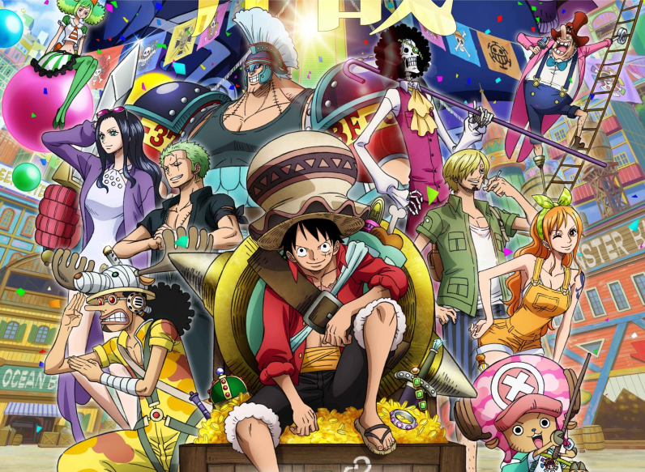

Historia De One Piece

Riqueza, fama e poder é a promessa para quem encontrar o One Piece, tesouro absoluto deixado por Gol D. Roger, o Rei dos Piratas. Antes de ser executado em sua cidade natal, Roger instigou o mundo a sair em busca do One Piece. Seu grito ecoou por anos e alcançou o coração das novas gerações de piratas, como a de Monkey D. Luffy, um jovem pirata que possuía apenas um chapéu de palha e um sonho: se tornar o novo Rei dos Piratas. Porém, ele não desejava fama ou poder, mas acreditava que a verdadeira liberdade só pode ser alcançada por aquele acima de todos os piratas. Luffy então sai em busca de uma tripulação forte o bastante para chegar a Grand Line e encontrar o One Piece, uma jornada que completa 25 anos em 2022.
Riqueza, fama e poder é a promessa para quem encontrar o One Piece, tesouro absoluto deixado por Gol D. Roger, o Rei dos Piratas. Antes de ser executado em sua cidade natal, Roger instigou o mundo a sair em busca do One Piece. Seu grito ecoou por anos e alcançou o coração das novas gerações de piratas, como a de Monkey D. Luffy, um jovem pirata que possuía apenas um chapéu de palha e um sonho: se tornar o novo Rei dos Piratas. Porém, ele não desejava fama ou poder, mas acreditava que a verdadeira liberdade só pode ser alcançada por aquele acima de todos os piratas. Luffy então sai em busca de uma tripulação forte o bastante para chegar a Grand Line e encontrar o One Piece, uma jornada que completa 25 anos em 2022.